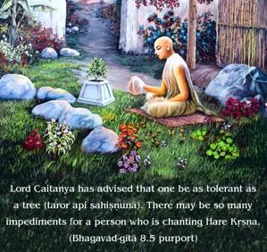

And whoever, at the end of his life, quits his body remembering Me alone at once attains My nature. Of this there is no doubt.

In this verse the importance of Kṛṣṇa consciousness is stressed. Anyone who quits his body in Kṛṣṇa consciousness is at once transferred to the transcendental nature of the Supreme Lord. The Supreme Lord is the purest of the pure. Therefore anyone who is constantly Kṛṣṇa conscious is also the purest of the pure. The word smaran (“remembering”) is important. Remembrance of Kṛṣṇa is not possible for the impure soul who has not practiced Kṛṣṇa consciousness in devotional service. Therefore one should practice Kṛṣṇa consciousness from the very beginning of life. If one wants to achieve success at the end of his life, the process of remembering Kṛṣṇa is essential. Therefore one should constantly, incessantly chant the mahā-mantra – Hare Kṛṣṇa, Hare Kṛṣṇa, Kṛṣṇa Kṛṣṇa, Hare Hare/ Hare Rāma, Hare Rāma, Rāma Rāma, Hare Hare. Lord Caitanya has advised that one be as tolerant as a tree (taror api sahiṣṇunā). There may be so many impediments for a person who is chanting Hare Kṛṣṇa. Nonetheless, tolerating all these impediments, one should continue to chant Hare Kṛṣṇa, Hare Kṛṣṇa, Kṛṣṇa Kṛṣṇa, Hare Hare/ Hare Rāma, Hare Rāma, Rāma Rāma, Hare Hare, so that at the end of one’s life one can have the full benefit of Kṛṣṇa consciousness.